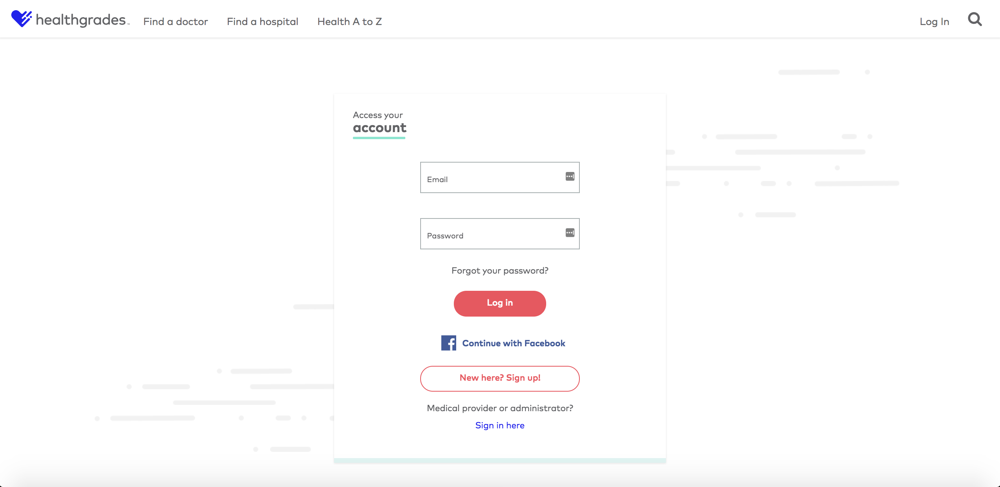
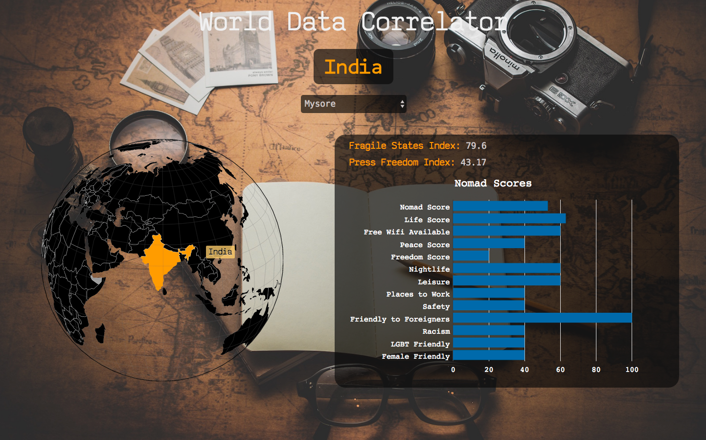
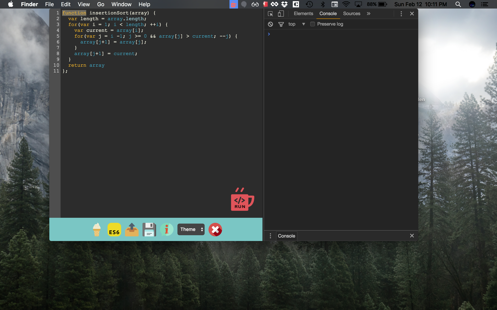
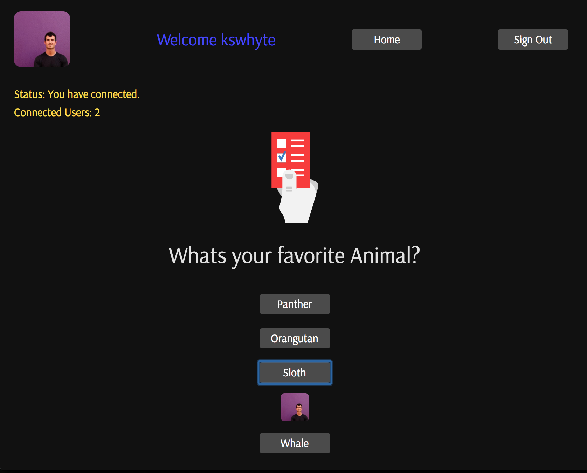
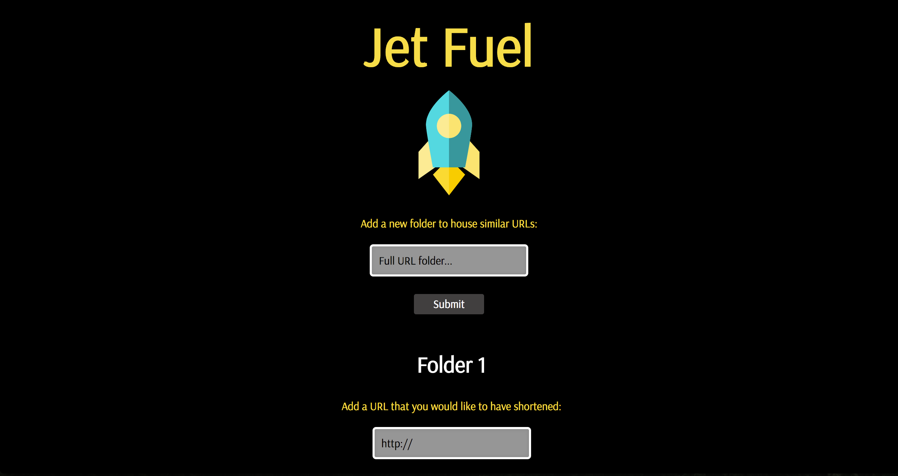
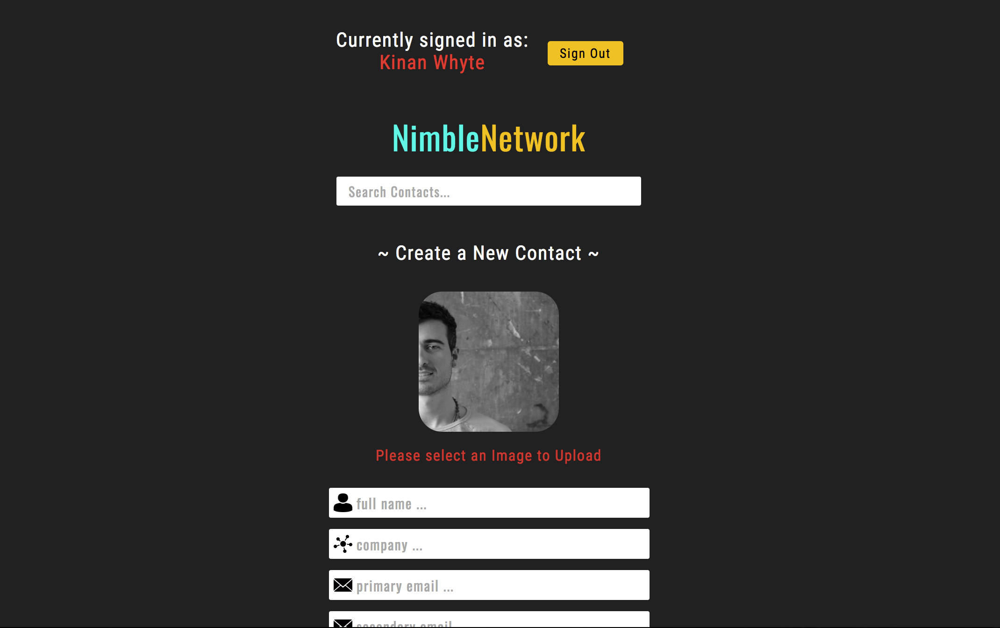
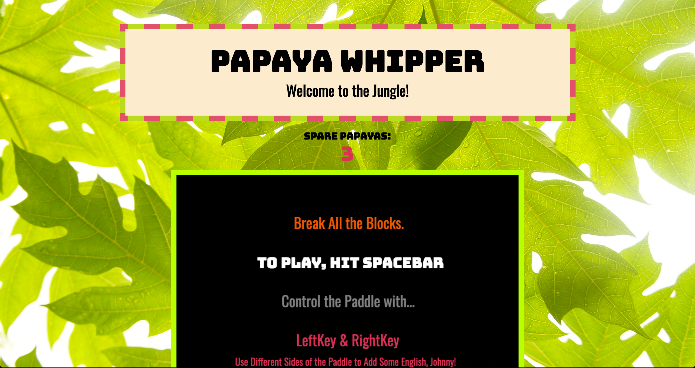
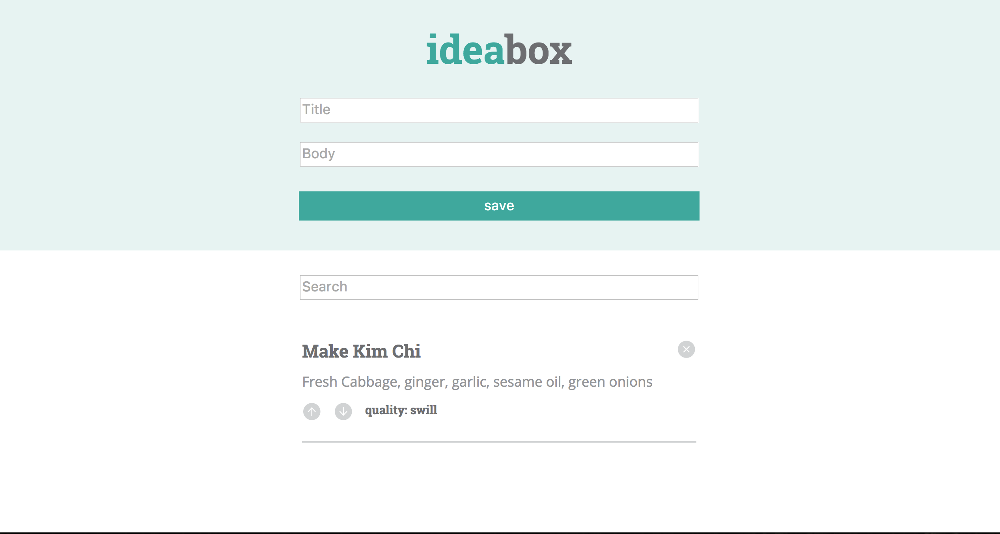
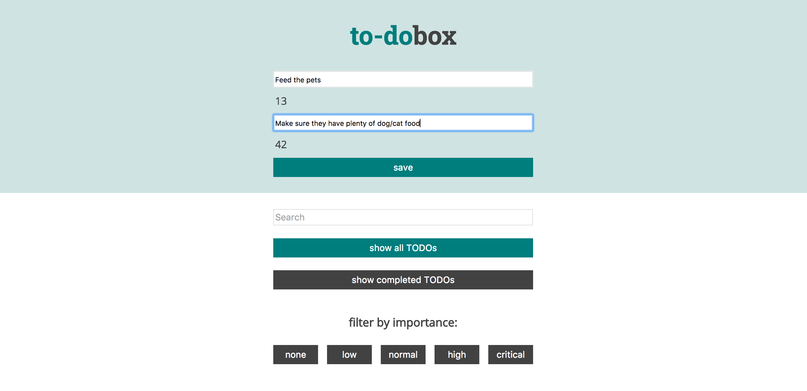

Professional Projects
The following project represents my first major professional project, which was fully seen through--a full launch of the new Healthgrades Authentication
system with Amazon Cognito and a new design system. Our team of 7 used an agile work flow, SCRUM, and JIRA, while keeping with monthly team-created lunch and learns and a front-end chapter meeting
Healthgrades.com Authentication System

A web app featuring user authentication & profile management: login/logout, save/update personal information, and save doctors to your profile
Healthgrades.com reaches 1 million users+/day, connecting patients to doctors and rating doctors & hospitals for utmost quality healthcare. We worked primarily on
migrating all users from a legacy database created in C# to Amazon Cognito's user management system while revamping the login frontend with the Healthgrades 3.0 design system
FRONT-END: ReactJS, React Router, Vanilla Javascript, LESS, CSS Modules
BACK-END: NodeJS, Amazon Cognito
TESTING: Jasmine, Jest, Enzyme, Selenium, Chromeless, Storybook
Turing Projects
The following set of projects collectively exhibit my progression through Turing: School of Software and Design's Front-End Development program. In each project, I aimed to explore the front facing elements that make software interactive. As the program advanced, the meeting point of design and development became clearer, and skills at writing a blend of HTML, CSS, and Javascript began to bear fruits. From UX/UI principles to an expert understanding of the front-end toolkit, Turing has been essential to my evolution as a software developer and awareness of the critical part we play in modern engineering teams.
These projects aim to hone a professional craft in...
Fundamental Web Technologies
Web Development with JavaScript
Professional Client-Side Development
Desktop and Mobile Applications with Web Technologies
World Data Correlator

An application that provides an interactive clickable globe that can display data about countries and cities relative to travelers.
Once a user clicks on a country, they are able to view essential information from the CIA World Factbook and NomadList.
FRONT-END: D3.js, Vanilla Javascript, jQuery, SASS
BACK-END: Ruby on Rails, POSTGRESQL
TESTING: Capybara, Selenium, Rspec
DockJS

In this project, we designed an interpretation of a traditional desktop application using Electron, specifically a JavaScript REPL interface that fully functions offline and can be accessed in the dock in multiple platforms.
To accomodate for recent additions to the JavaScript libray with ES6/ES7, a user can to upload code in vanilla JS that could be transpiled into ES6 and vice versa.
FRONT-END: Electron, Vanilla Javascript, jQuery, CSS
TESTING: Chai, Mocha, Spectron
Pollr

The chief aim of this project was to explore client-side security with Auth0 and build a real-time application with communications to WebSockets.
A user will come to the web app to create a poll/question for whatever audience of choice using 4 options/answers to go with it. Then a user’s Github image will act as a marker to indicate when they have selected a poll option.
All poll option selections update in real-time, and the poll 'admin' is able to specify an ending date and time.
FRONT-END: Vanilla Javascript, jQuery, CSS, Auth0
BACK-END: Node.js, Express, WebsocketIO
TESTING: Mocha, Chai
Weather Forecast
One of the main goals of this app included retrieving and displaying forecast data from an API.
A user is able to fetch weather from a user's current city, or given zipcode or city name and save “pinned” or favorite cities in order to display multiple extended weather forecasts at ease.
When running this app, it is necessary to allow your browser to load "unsafe scripts" in order to render fresh weather information.
FRONT-END: React, Redux, SASS
BACK-END: Geolocation and OpenWeatherMap APIs
TESTING: Enzyme
Jet Fuel

The main aim of this project was to create a URL shortener service.
This application allows users to create folders (like bookmark folders) to store long, ugly URLs as shortened URLs through our service.
The main goal of this application was to redirect a request at the shortened URL to a user's long URL equivalent. Each shortened URL is belong to a unique folder which is capable of storing "n" URLs.
The secondary goal was to track URL usage and provide popularity statistics.
FRONT-END: ReactJS, CSS
BACK-END: Node.js, Express
TESTING: Mocha, Chai
Nimble Network

Planning, design, and overall user experience of the application are highlighted in this app.
As a capstone project, we chose to create a contactlist for users to house information of potential employers, clients, or whatever category of connections desired.
Networking is a critical skill, so we built an app to help you organize all of your contacts.
FRONT-END: ReactJS, SASS
BACK-END: Firebase
TESTING: Enzyme
remEMBER
A notepad-like app in Ember with full CRUD functionality.
Aside from learning a new JS framework, this project was largely focused on dialing development git workflow, ensuring a smooth process of communicating what new features are made or worked on in all future projects.
We learned how real projects are managed and saw which methods of working through issues and features works most seamlessly.
FRONT/BACK-END: Ember, CSS
TESTING: Ember Q-Unit
Shoot the Breeze
In this project we set out to build a chat-box style app in which users could shoot the breeze with each other.
Within each users account, upon sign-in, up to 100 messages and a list of online users can be viewed.
Users are able to filter through messages by message content, username, and date/time.
FRONT-END: ReactJS, SASS
BACK-END: Firebase
TESTING: Enzyme
Game Time

This game is called Papaya Whipper, a new take on the classic Breakout arcade game. Its name carries on the legacy of building games as tributes to the finest of CSS color names.
Papaya Whipper is our humble tribute to one of the most sensible, attractive, and even delicious colors humankind has ever created - Papaya Whip.
Play your way through increasingly difficult stages for a chance to earn a special hidden reward!
FRONT-END: Vanilla Javascript, jQuery, HTML5 Canvas, CSS
BACK-END:
TESTING: Mocha, Chai.
Idea Box

This is a simple application for recording and archiving ideas (good and bad alike) in a fluid and responsive client-side interface.
This app features snappy filtering in the browser localStorage to persist our wonderful ideas between sessions.
FRONT-END: Vanilla Javascript, jQuery, CSS
BACK-END: localStorage
TESTING: Mocha, Chai
ToDo List

At the start to this project, we inherited someone’s previous ideaBox and pivoted it over to a '2DoBox'.
The idea behind 2DoList was to take the code base from one person's repository and pivot: Re-create this app with added features.
We kept accessibility in mind here, as this project was largely graded on how accessible the users felt the UI was.
FRONT-END: Vanilla Javascript, jQuery, CSS
TESTING: Selenium Webdriver
Mini-Projects
This section consists of smaller apps that represent a culmination of fundamental skills used to bring basic ideas to full-functionality in minimal time.